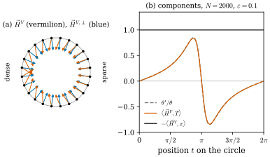
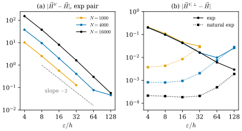

47.4 Approximate Mean Curvature and Its Convergence
Goals
- approximate mean curvature \(\vec H^V_{\rho,\xi,\varepsilon}\)를 정의하고, point cloud에서의 계산식을 부호와 상수까지 맞게 쓸 수 있다.
- 세 수렴 정리(Theorem 4.3, 4.5, 4.8)의 가정과 결론을 정확히 말하고, 각 정리의 증명이 오차를 어떤 항으로 나누는지 설명할 수 있다.
- orthogonal approximate mean curvature가 왜 필요한지, 언제 진짜 mean curvature와 다른 것으로 수렴하는지 예로 보일 수 있다.
- point cloud에서 scale \(\varepsilon\)을 점 간격 \(h\)에 대해 어떻게 골라야 하는지를 두 정리의 rate로 설명할 수 있다(\(\varepsilon \gg \sqrt h\)와 \(\varepsilon \gg h\)).
Prerequisites
- Section 47.3: regularized first variation (47.3.3)
- Section 47.1: kernel pair(Definition 47.1.1)와 Conventions 상자
- Section 47.2: 국소 거리 \(\Delta^{1,1}_U\)(Definition 47.2.1)
- Section 46.5: generalized mean curvature(Definition 46.5.4), 밀도가 고르지 않은 curve(Example 46.5.9)
- Section 46.4: Young measure 표현(Proposition 46.4.7)
Motivation
Section 47.3에서 regularized first variation \(\delta V*\rho_\varepsilon\)이 모든 varifold에서 연속 함수라는 것을 보았다. smooth surface에서는 \(\delta V = -\vec H\norm{V}\)이므로, 흐린 first variation을 흐린 mass로 나누면 \(\vec H\)의 근사가 나올 것이다. 이것이 (47.1.1)의 정체다. 이 절은 그것을 정확히 정의하고, 논문의 가장 중요한 결과인 세 수렴 정리를 읽는다. 첫째는 \(\varepsilon \to 0\)이면 거의 모든 점에서 수렴한다는 것, 둘째와 셋째는 데이터가 진짜 surface와 얼마나 가까운지에 따라 \(\varepsilon\)을 어떻게 골라야 하고 오차가 얼마인지다.
Definition
먼저 두 상수를 정한다. \(d\)차원 plane 위에서 profile을 적분한 값이다.
\(C_\rho = \int_{\R^d}\rho(\abs{y})\,dy\)이고, (46.7.3)의 상수와 같다. [BLM17, (4.1)]
Definition 47.4.1 (approximate mean curvature). \(\Omega \subset \R^n\)이 open set이고 \(V\)가 \(\Omega\) 위의 \(d\)-varifold라 하자. \(\varepsilon \gt 0\)과 \(\norm{V}*\xi_\varepsilon(x) \gt 0\)인 \(x \in \Omega\)에 대해
를 \(x\)에서 \(V\)의 approximate mean curvature(근사 평균곡률)라 한다. [BLM17, Def 4.1, (4.2)]
\(\delta V\)가 locally bounded이면 \(\delta V = -\vec H\norm{V} + \delta V_s\)이고 \(\vec H\)는 \(-\delta V\)의 \(\norm{V}\)에 대한 Radon–Nikodym 도함수다((46.5.5)). 논문은 Definition 4.1을 “흐린 first variation의 흐린 mass에 대한 Radon–Nikodym 도함수”로 읽을 수 있다고 말한다. 다만 \(\delta V\)가 measure가 아니어도 뜻을 갖는다.
Example 47.4.2 (approximate mean curvature of a point cloud varifold). \(V = \sum_{j=1}^Nm_j\delta_{x_j} \otimes \delta_{P_j}\)이고 \(r_j = \abs{x_j - x}/\varepsilon\), \(u_j = (x_j - x)/\abs{x_j - x}\)라 하자. (47.3.3)과 \(\norm{V}*\xi_\varepsilon(x) = \varepsilon^{-n}\sum_jm_j\xi(r_j)\)에서
이다. 분자는 \(x\) 자신을 뺀 \(B_\varepsilon(x)\) 안의 원자, 분모는 \(x\)를 포함한 \(B_\varepsilon(x)\) 안의 원자에 대한 합이다. 논문은 이 식이 예를 들어 \(x = x_i\)(데이터 점)에서 잘 정의된다고 말하고, \(\varepsilon\)의 선택이 결정적이라고 강조한다. \(B_\varepsilon(x)\)가 \(x\) 말고 다른 점을 포함할 만큼 커야 하고, 지나치게 흐리지 않을 만큼 작아야 한다. [BLM17, Example 4.2]
반지름 \(0.5\)인 circle 위의 \(N = 20000\)개 점(정확한 tangent line, mass \(\pi/N\)), natural exp pair, \(\varepsilon = 0.01\)이면 \(x_0 = (0.5, 0)\)에서 (47.4.3)은 \((-1.9999, 0)\)으로 정답 \((-2, 0)\)과 맞는다.
Verification: verify/v-47-4-approximate-mean-curvature.py
Verification: verify/v-47-4-approximate-mean-curvature.py
Convergence I: Almost Every Point
Theorem 47.4.3 (approximation I). \(\Omega \subset \R^n\)이 open set이고 \(V = v(M, \theta)\)가 \(\Omega\)에서 locally bounded first variation을 갖는 rectifiable \(d\)-varifold이면, \(\norm{V}\)-a.e. \(x \in \Omega\)에서 \[ \vec H^V_{\rho,\xi,\varepsilon}(x) \xrightarrow[\varepsilon \to 0]{} \vec H(x) \] 이다. [BLM17, Thm 4.3, (4.4)]
Proof sketch. \(\delta V = -\vec H\norm{V} + \delta V_s\)를 정의에 넣고 \(\vec H(x)\)를 더하고 빼면 오차가 세 항으로 나뉜다.
approximate tangent plane이 있는 점에서는 \(\varepsilon^{-d}\norm{V}(B_\varepsilon(x)) \to \omega_d\theta(x)\)이고
이다(Proposition 46.7.2(c)와 같은 계산). \(\xi\)에도 같은 식이 성립하므로 \(\mathrm{II}\)(kernel의 비)가 \(0\)으로 간다. 상수 \(C_\xi/C_\rho\)가 정확히 이것을 보정한다. \(\mathrm{I}\)은 \(\rho_\varepsilon \le \norm{\rho}_\infty\varepsilon^{-n}\)으로 bound하면 bounded인 인자 \(\varepsilon^{-d}\norm{V}(B_\varepsilon(x))/(\varepsilon^{n-d}\norm{V}*\xi_\varepsilon(x)) \to \omega_d/C_\xi\)에 ball 평균 \[ \frac{1}{\norm{V}(B_\varepsilon(x))}\int_{B_\varepsilon(x)}\abs{\vec H(x) - \vec H(y)}\,d\norm{V}(y) \] 을 곱한 것이 되고, 이것은 \(\vec H \in L^1_{\mathrm{loc}}(\norm{V})\)의 Lebesgue point에서 \(0\)으로 간다. \(\mathrm{III}\)은 같은 인자에 \(\abs{\delta V_s}(B_\varepsilon(x))/\norm{V}(B_\varepsilon(x))\)를 곱한 것인데, singular measure의 \(\norm{V}\)에 대한 밀도는 \(\norm{V}\)-a.e.에서 \(0\)이다(measure의 미분 정리). \(\square\)
이 정리가 말하는 것은 두 가지다. 정의가 옳다는 것(\(\varepsilon \to 0\)이면 진짜 mean curvature가 나온다)과, singular part가 있어도 된다는 것이다. boundary, 모서리, junction이 있어도 그 위가 아닌 거의 모든 점에서 수렴한다. 대신 수렴 속도는 말하지 않는다.
Example 47.4.4 (a smooth ellipse). ellipse \((2\cos t, \sin t)\) 자체(discretization의 오차가 없도록 \(4\times10^5\)개 점에 길이 원소만큼의 mass를 준 것)에서 vertex \((2, 0)\)의 \(\abs{\vec H} = 2\)를 계산하면, \(\varepsilon = 0.05, 0.1, 0.3\)일 때 exp pair \((\rho, \rho)\)는 \(1.995\), \(1.980\), \(1.840\)이고 natural exp pair는 \(1.994\), \(1.977\), \(1.819\)이다. 둘 다 \(2\)로 가고, 오차는 \(\varepsilon^2\)에 비례하는 smoothing bias다(\(\varepsilon\)을 \(3\)배로 하면 오차가 약 \(8\)배). 연속인 surface에서는 natural pair가 더 낫지 않다. natural pair의 이점은 이산 데이터에서 나타난다(Section 47.5). exp pair의 값은 Example 46.7.5와 같다.
Verification: verify/v-47-4-approximate-mean-curvature.py
Example 47.4.5 (at a corner the approximate mean curvature blows up). 정사각형의 vertex \(v = 0\)에서 두 변이 \(e_1\), \(e_2\) 방향으로 나간다고 하자. 변 위에서 \(y - v = se_1\), \(P = e_1e_1^{\mathsf T}\)이므로 그 변의 기여는 \(\varepsilon^{-n-1}\int_0^\varepsilon\rho'(s/\varepsilon)\,ds\,e_1 = -\varepsilon^{-n}\rho(0)e_1\)이다. 따라서 \(\delta V*\rho_\varepsilon(v) = -\varepsilon^{-n}\rho(0)(e_1 + e_2)\)이고, \(\norm{V}*\xi_\varepsilon(v) = \varepsilon^{1-n}C_\xi\)(\(d = 1\))이므로 \[ \vec H^V_{\rho,\xi,\varepsilon}(v) = \frac{\rho(0)}{C_\rho\,\varepsilon}(e_1 + e_2), \qquad \abs{\vec H^V_{\rho,\xi,\varepsilon}(v)} = \frac{\sqrt2\,\rho(0)}{C_\rho}\cdot\frac1\varepsilon \] 이다. 방향은 정사각형의 안쪽이고, 크기는 \(\xi\)에 무관하게 \(1/\varepsilon\)로 커진다. \(\R^2\)에서 정규화한 exp이면 \(\sqrt2\rho(0)/C_\rho = 1.172\)이고 \(\varepsilon = 0.1\)에서 \(\vec H^V = (8.286, 8.286)\)이다. vertex에는 \(\delta V_s\)의 Dirac mass(turning vector)가 있으므로 (47.4.4)의 셋째 항이 \(0\)으로 가지 않는다. vertex는 \(\norm{V}\)-null이므로 Theorem 47.4.3과 모순되지 않는다. vertex에서 거리 \(\varepsilon\) 이상인 변 위의 점에서는 값이 정확히 \(0\)(곧은 선분)이다.
Verification: verify/v-47-4-approximate-mean-curvature.py
Convergence II: A Rate for Approximating Varifolds
Theorem 4.3은 고정된 \(V\)에 대한 것이다. 실제로는 이산 데이터 \(V_i\)가 있고 그 극한 \(V\)가 있다. 논문은 이 상황을 두 가지 점에서 신중하게 설정한다. 첫째, 평가점을 \(z_i \to x\)로 어긋나게 둔다. 데이터의 support가 극한의 support 위에 있을 이유가 없기 때문이다(측정된 점은 surface 위에 정확히 있지 않다). 둘째, \(V_i\)는 손에 있고 \(V\)는 보통 모른다. 이산 variational problem을 풀어 \(V_i\)를 얻고 Theorem 3.6(Theorem 47.3.8)으로 극한의 존재를 아는 식이다. 그래서 오차를 “\(V_i\)가 \(V\)를 얼마나 잘 근사하는가”를 재는 수열 \(d_i\)와 \(\varepsilon_i\)로 쓴다.
Definition 47.4.6 (Hypothesis 1). kernel pair \((\rho, \xi)\)가 Definition 47.1.1의 조건에 더해 \(\rho \in W^{2,\infty}\), \(\xi \in W^{1,\infty}\)이면 Hypothesis 1을 만족한다고 한다. [BLM17, Hypothesis 1]
곧 \(\rho'\)과 \(\xi\)가 Lipschitz여야 한다. exp와 natural exp pair는 만족하고(모두 \(C^\infty\)), tent와 natural tent pair는 만족하지 않는다(Non-example 47.1.3).
Lemma 47.4.7 (key estimates). \(\Omega \subset \R^n\)이 open set이고 \(V = v(M, \theta)\)가 locally bounded first variation을 갖는 rectifiable \(d\)-varifold, \((\rho, \xi)\)가 Hypothesis 1을 만족하고 \((V_i)_i\)가 \(d\)-varifold의 열이라 하자. 모든 \(0 \lt \varepsilon \lt 1\), \(\norm{V}\)-a.e. \(x\), 모든 열 \(z_i \to x\)에 대해 \(B = B_{\varepsilon + \abs{x - z_i}}(x)\)로 두면
이다. 또한 \(0\)으로 감소하는 열 \((d_i)\), \((\eta_i)\)가 있어 \(x\) 중심의 모든 ball \(B \subset \Omega\)에서
이면, \(\eta_i + d_i + \abs{x - z_i} = o(\varepsilon_i)\)인 모든 \(\varepsilon_i \to 0\)에 대해
Proof sketch. 모든 증명이 한 가지 사실에 기댄다. \(\supp\varphi \subset B\)이면 \(\Delta^{1,1}_B\)의 정의에서 \(\abs{\int\varphi\,d\mu - \int\varphi\,d\nu} \le (\norm{\varphi}_\infty + \mathrm{lip}(\varphi))\Delta^{1,1}_B(\mu, \nu)\)이다. (4.11): \(y \mapsto \xi(\abs{y - z_i}/\varepsilon)\)은 Lipschitz 상수가 \(\mathrm{lip}(\xi)/\varepsilon\)이므로 measure를 바꾸는 비용이 \(\norm{\xi}_{W^{1,\infty}}\Delta^{1,1}_B/\varepsilon\)이고(\(\varepsilon \lt 1\)), 평가점을 \(z_i\)에서 \(x\)로 옮기는 비용이 \(\mathrm{lip}(\xi)\abs{x - z_i}\norm{V}(B)/\varepsilon\)이다. (4.12): \((y, S) \mapsto S\nabla\rho_1((y - z_i)/\varepsilon)\)은 \(y\)에 대해 Lipschitz 상수 \(\mathrm{lip}(\nabla\rho_1)/\varepsilon\), \(S\)에 대해 \(\norm{\nabla\rho_1}_\infty\)이다. plane \(S\)에도 의존하므로 mass가 아니라 varifold의 거리 \(\Delta^{1,1}_B(V_i, V)\)가 필요하다. 정의의 앞에 \(1/\varepsilon\)이 하나 더 있으므로 전체가 \(1/\varepsilon^2\)이다. (4.14): tangent plane이 있고 \(\theta\)의 Lebesgue point인 \(x\)에서 \(\varepsilon_i^n\norm{V}*\xi_{\varepsilon_i}(x) \sim \varepsilon_i^d\theta(x)\int_{T_xM}\xi\)이고 \(\norm{V}(B_{\varepsilon_i}(x)) \sim \omega_d\varepsilon_i^d\theta(x)\)이다. \(V_i\)와 \(z_i\)로 바꾼 차이는 위의 두 비용으로 \(\varepsilon_i^{d-n-1}(d_i + \abs{x - z_i})\) 정도이고, 이것은 가정에서 \(o(\varepsilon_i^{d-n})\)이다. \(\square\)
이 lemma의 요점은 “미분 하나에 \(1/\varepsilon\) 하나”다. mass를 흐린 \(\norm{V}*\xi_\varepsilon\)은 kernel을 미분하지 않으므로 데이터의 오차가 \(1/\varepsilon\)배로, first variation을 흐린 \(\delta V*\rho_\varepsilon\)은 kernel을 한 번 미분하므로 \(1/\varepsilon^2\)배로 증폭된다. 이 \(1/\varepsilon^2\)가 다음 정리의 rate를 정한다.
Theorem 47.4.8 (convergence II). \(\Omega \subset \R^n\)이 open set이고 \(V = v(M, \theta)\)가 \(\Omega\)에서 bounded first variation을 갖는 rectifiable \(d\)-varifold, \((\rho, \xi)\)가 Hypothesis 1을 만족한다고 하자. \((V_i)_i\)가 \(d\)-varifold의 열이고, 양수이며 \(0\)으로 감소하는 열 \((\eta_i)\), \((d_i)\)가 있어 \(\supp\norm{V}\)의 점을 중심으로 하는 모든 ball \(B \subset \Omega\)에서
라 하자. \(\norm{V}\)-a.e. \(x \in \Omega\)와 \(x\)로 가는 모든 열 \((z_i)\)에 대해, 양수이며 \(0\)으로 감소하는 열 \((\varepsilon_i)\)가
를 만족하면, \(i\)가 충분히 클 때
이고 \(\vec H^{V_i}_{\rho,\xi,\varepsilon_i}(z_i) \to \vec H(x)\)이다. [BLM17, Thm 4.5, (4.24)–(4.27)]
Proof sketch. \(A_i = \delta V_i*\rho_{\varepsilon_i}(z_i)\), \(A = \delta V*\rho_{\varepsilon_i}(x)\), \(B_i = \norm{V_i}*\xi_{\varepsilon_i}(z_i)\), \(B = \norm{V}*\xi_{\varepsilon_i}(x)\)로 두고 비의 차이를 분자의 차이와 분모의 차이로 나눈다.
\[ \abs{\vec H^{V_i}(z_i) - \vec H^V(x)} \le \frac{C_\xi}{C_\rho}\Big(\frac{\abs{A_i - A}}{B_i} + \abs{A}\,\Big|\frac{1}{B_i} - \frac{1}{B}\Big|\Big) \]먼저 \(\Delta^{1,1}_B(\norm{V_i}, \norm{V}) \le \Delta^{1,1}_B(V_i, V)\)이다(\(S\)에 의존하지 않는 test function은 그 일부다). 그래서 (47.4.10)이 (47.4.8)을 준다. \(\mu_i = \varepsilon_i + \abs{x - z_i} + \eta_i\)로 두면, 첫 항은 (47.4.7), (47.4.9), (47.4.10)과 \(\norm{V}(B_{\mu_i}(x))/\norm{V}(B_{\varepsilon_i}(x)) \to 1\)로 \(\tfrac{8}{C_\rho}\norm{\rho}_{W^{2,\infty}}(d_i + \abs{x - z_i})/\varepsilon_i^2\) 이하이다. 둘째 항은 (47.4.6), Theorem 4.3과 같은 논법으로 \(\tfrac{8\norm{\xi}_{W^{1,\infty}}}{C_\xi}(\abs{\vec H(x)} + 1)(d_i + \abs{x - z_i})/\varepsilon_i\) 이하로, 한 order 작다. 수렴은 triangle inequality \[ \begin{aligned} \abs{\vec H^{V_i}(z_i) - \vec H(x)} &\le \abs{\vec H^{V_i}(z_i) - \vec H^V(x)} \\ &\quad + \abs{\vec H^V(x) - \vec H(x)} \end{aligned} \] 과 Theorem 4.3에서 나온다. \(\square\)
Remark 47.4.9 (reading Theorem 4.5). 논문이 정리 앞뒤에서 덧붙이는 말과 우리의 읽기를 나누어 적는다.
- (논문) \(V\)에 대한 regularity 가정은 어떤 뜻에서 최소다. \(\delta V_s \ne 0\)이어도 된다. 그 대가로 rate가 최적이 아니다.
- (논문) 가정 (47.4.10)의 \(d_i\)가 \(0\)으로 간다는 것은 \(V_i \overset{*}{\rightharpoonup} V\)이면 보장된다(Introduction). 문제는 그 속도다.
- (우리의 해석) (47.4.10)은 국소 mass로 정규화한 상대 오차다. 균일한 간격 \(h\)의 point cloud에서 위치의 오차가 \(h\) 정도이면 Proposition 47.2.6처럼 \(\Delta^{1,1}_B\)는 “\(h\) × 국소 mass” 정도이므로 \(d_i \approx h\), \(\eta_i \approx h\)이다. 그러면 (47.4.11)은 \(h/\varepsilon^2 \to 0\), 곧 \(\varepsilon \gg \sqrt h\)이다. 점이 \(10^4\)배 많아져 \(h\)가 \(10^{-4}\)배가 되어도 \(\varepsilon\)은 \(10^{-2}\)배까지만 줄일 수 있다는 뜻이다.
The Orthogonal Approximate Mean Curvature
고전적인 mean curvature는 normal vector인데, \(\vec H^V_{\rho,\xi,\varepsilon}(x)\)는 tangent 방향으로 정사영한 vector들의 적분이다. 논문은 이 때문에 \(V_i\)의 mass distribution에 작은 오차가 있어도 tangential 성분에 무시할 수 없는 오차가 생긴다고 지적하고, \(x\)에서의 normal space로 정사영하는 것을 처방으로 내놓는다. 일반 varifold에서 “\(x\)의 plane”은 Young measure \(\nu_x\)(Proposition 46.4.7)로 주어진다.
Definition 47.4.10 (orthogonal approximate mean curvature). \(\Omega \subset \R^n\)이 open set이고 \(V = \norm{V} \otimes \{\nu_x\}_x\)가 \(\Omega\) 위의 \(d\)-varifold라 하자. \(\norm{V}\)-a.e. \(x\)에서
를 \(x\)에서 \(V\)의 orthogonal approximate mean curvature(직교 근사 평균곡률)라 한다. \(\Pi_{P^\perp} = I - P\)는 normal space로의 projection이다. [BLM17, Def 4.6, (4.33)]
point cloud의 원자 \(x_{j_0}\)에서는(다른 원자와 위치가 겹치지 않으면) \(\nu_{x_{j_0}} = \delta_{P_{j_0}}\)이므로 그냥 \(\vec H^{V,\perp}(x_{j_0}) = (I - P_{j_0})\vec H^V(x_{j_0})\)이다. 교차점처럼 한 위치에 여러 plane이 있으면 각 plane의 normal projection을 mass 비율로 평균한다.
Proposition 47.4.11 (orthogonal version converges for integral varifolds). \(\Omega \subset \R^n\)이 open set이고 \(V = v(M, \theta)\)가 bounded first variation \(\delta V = -\vec H\norm{V} + \delta V_s\)를 갖는 integral \(d\)-varifold이면, \(\mathcal{H}^d\)-a.e. \(x \in M \cap \Omega\)에서 \(\vec H^{V,\perp}_{\rho,\xi,\varepsilon}(x) \to \vec H(x)\)(\(\varepsilon \to 0\))이다. [BLM17, Prop 4.7, (4.34)]
Proof. integral varifold에서는 \(\mathcal{H}^d\)-a.e. \(x \in M\)에서 \(\vec H(x) \perp T_xM\)이다(Brakke의 정리 [Brakke78]). 또 a.e. \(x\)에서 \(\nu_x = \delta_{T_xM}\)이다. 그래서 \[ \begin{aligned} \abs{\vec H^{V,\perp}(x) - \vec H(x)} &= \abs{\Pi_{T_xM^\perp}(\vec H^V(x) - \vec H(x))} \\ &\le \abs{\vec H^V(x) - \vec H(x)} \to 0 \end{aligned} \] 이다(Theorem 4.3). \(\square\)
Example 47.4.12 (when the two versions converge to different limits). integral이라는 가정이 빠지면 Proposition 4.7은 성립하지 않는다. Example 46.2.7(b)의 point cloud를 다시 쓰자. unit circle 위에 \(t_j = 2\pi u_j + 0.5\sin(2\pi u_j)\), \(u_j = (j + \tfrac12)/N\)으로 점을 놓고(\(t = \pi\) 근처에 몰린다) mass를 모두 \(2\pi/N\)으로 주면, 극한은 \(\theta = 1/(1 + 0.5\cos2\pi u)\)인 \(v(C, \theta)\)다. rectifiable이지만 integral이 아니고, generalized mean curvature는 Example 46.5.9에서 \[ \vec H = -x + \frac{\theta'}{\theta}\,T, \qquad \frac{\theta'}{\theta} = \frac{0.5\sin2\pi u}{(1 + 0.5\cos2\pi u)^2} \] 이다(\(T\)는 반시계 방향 unit tangent). Theorem 4.3에 따라 \(\vec H^V\)는 이 \(\vec H\)로 가고, \(\vec H^{V,\perp}\)는 tangential 성분이 지워진 \(-x\)로 간다. 둘은 다르다.
Figure 47.4.1은 \(N = 2000\), natural exp, \(\varepsilon = 0.1\)에서 이것을 확인한다. (a)에서 주홍 \(\vec H^V\)는 점이 몰린 왼쪽으로 기울고, 파랑 \(\vec H^{V,\perp}\)는 정확히 중심을 향한다. (b)에서 \(\vec H^V\)의 tangential 성분(주홍)은 예측 \(\theta'/\theta\)(회색 점선)와 \(0.013\) 안에서 겹치고, 최대 \(0.847\)(\(t \approx 2.73\))로 진짜 curvature \(1\)과 크기가 비슷하다. normal 성분(검정)은 \(0.9988\)로 거의 정확하다.
응용에서는 \(\theta\)가 데이터의 sampling 밀도에서 생긴 가짜이므로 \(\vec H^{V,\perp}\)가 원하는 답이다. 이 의미에서 integral이 아닌 varifold에서는 orthogonal 버전이 “틀린” 극한으로 가는 것이 오히려 장점이다. 논문의 §8.1.4 실험(Section 47.7)이 이 효과를 보인다.
Verification: verify/v-47-4-approximate-mean-curvature.py

논문은 orthogonal 버전이 \(T_xM\)의 점별 추정에 매우 민감하므로 Theorem 4.5를 그대로 일반화할 수는 없다고 말한다. \(V_i\)의 plane distribution \(\nu^i_y\)가 \(T_yM\)에 충분히 가깝다는 더 강한 가정이 필요하고, 그 가정 아래에서 rate가 크게 좋아진다.
Theorem 47.4.13 (convergence III). \(\Omega \subset \R^n\)이 open set이고 \(M \subset \Omega\)가 boundary 없는 \(C^2\) \(d\)-submanifold, \(V = v(M, 1)\)(multiplicity \(1\))이라 하자. \(T_yM\)을 \(M\)의 tubular neighbourhood에서 정의된 \(C^1\) map \(\widetilde{T_yM}\)으로 넓힌다. \((V_i)_i\)가 \(\Omega\) 위의 \(d\)-varifold의 열이고 \((\rho, \xi)\)가 Hypothesis 1을 만족하며, \(x \in M\)이고 \(z_i \to x\), \(z_i \in \supp\norm{V_i}\)라 하자. 양수이며 \(0\)으로 감소하는 열 \((\eta_i)\), \((d_{1,i})\), \((d_{2,i})\), \((\varepsilon_i)\)가 있어 \(\supp\norm{V}\)의 점을 중심으로 하고 \(x\)의 한 neighborhood에 들어가는 모든 ball \(B \subset \Omega\)에서
이고, \(V_i = \norm{V_i} \otimes \nu^i\)로 쓰고 \(B'_i = B_{\varepsilon_i + \abs{x - z_i}}(x) \cap \supp\norm{V_i}\)라 할 때
이면, \(C \gt 0\)이 있어
이다. 또 \(d_{1,i} + d_{2,i} + \eta_i + \abs{x - z_i} = o(\varepsilon_i)\)이면 \(\vec H^{V_i,\perp}_{\rho,\xi,\varepsilon_i}(z_i) \to \vec H(x)\)이다. [BLM17, Thm 4.8, (4.35)–(4.37)]
Proof sketch. 분자의 차이를 세 오차로 나눈다. \(a_i\)는 mass distribution의 오차(\(\norm{V}\)와 \(\norm{V_i}\)의 차이), \(b_i\)는 plane의 오차(\(\widetilde{T_yM}\)과 \(V_i\)의 plane \(S\)의 차이), \(c_i\)는 평가점을 \(x\)에서 \(z_i\)로 옮긴 오차다. 핵심은 \(a_i\)에 쓰는 test function
\[ \varphi_i(y) = \Pi_{\widetilde{T_{z_i}M}^\perp}\circ\Pi_{\widetilde{T_yM}}\,\nabla\rho_1\Big(\frac{y - z_i}{\varepsilon_i}\Big) \]의 Lipschitz 상수에 \(1/\varepsilon_i\)이 붙지 않는다는 관찰이다. \(\Pi_{\widetilde{T_{z_i}M}^\perp}\circ\Pi_{\widetilde{T_{z_i}M}} = 0\)을 끼워 넣으면 \(\abs{\varphi_i(y) - \varphi_i(w)}\)는 \(\norm{\widetilde{T_yM} - \widetilde{T_wM}}\norm{\nabla\rho_1}_\infty\)와 \(\norm{\widetilde{T_wM} - \widetilde{T_{z_i}M}}\,\mathrm{lip}(\nabla\rho_1)\abs{y - w}/\varepsilon_i\)의 합 이하이고, \(w\)가 \(B_{\varepsilon_i}(z_i)\) 안에 있으면 둘째 인자의 \(\norm{\widetilde{T_wM} - \widetilde{T_{z_i}M}} \le \mathrm{lip}(\widetilde{TM})\varepsilon_i\)가 \(1/\varepsilon_i\)을 상쇄한다. 그래서 \(\mathrm{lip}(\varphi_i) \le \mathrm{lip}(\widetilde{TM})\norm{\rho}_{W^{2,\infty}}\)이고 \(a_i \lesssim d_{1,i}/\varepsilon_i\)((47.4.14))이다. plane에 대한 부등식 \[ \norm{\Pi_{\widetilde{T_{z_i}M}^\perp}\Pi_{\widetilde{T_yM}} - \Pi_{P^\perp}\Pi_S} \le \norm{\widetilde{T_yM} - S} + \norm{\widetilde{T_{z_i}M} - P} \] 와 (47.4.15)로 \(b_i \lesssim d_{2,i}/\varepsilon_i\), 같은 논법으로 \(c_i \lesssim \abs{x - z_i}/\varepsilon_i\)이다. 분모의 차이는 Lemma 4.4로, 극한은 Proposition 4.7로 처리한다. \(\square\)
이 정리가 말하는 것은 “normal로 정사영하면 \(\varepsilon\) 한 order를 번다”는 것이다. projection 전에는 kernel의 기울기가 tangent 방향 성분을 크기 \(1\)로 가지고 있어 데이터의 작은 오차가 \(1/\varepsilon^2\)로 증폭된다. projection 뒤에 남는 것은 tangent plane이 \(\varepsilon\)-ball 안에서 기운 정도(\(\varepsilon\) 정도)만큼의 성분이라 \(1/\varepsilon\)만 남는다. 대가는 두 가지다. \(V\)가 multiplicity \(1\)이고 boundary 없는 \(C^2\) surface여야 하므로 교차나 junction은 이 정리 밖이다. 그리고 plane 추정의 오차 \(d_{2,i}\)가 ball 안의 모든 점에서 작아야 한다(\(\sup\) 꼴의 가정). point cloud에서 PCA나 회귀로 얻은 plane의 질이 직접 오차에 들어간다는 뜻이다.
Remark 47.4.14 (what the two rates predict for a point cloud). 간격 \(h\)의 point cloud에 정확한 tangent를 주면 \(d_{1,i}\), \(\eta_i\), \(\abs{x - z_i}\)는 \(h\) 정도이고 \(d_{2,i} = 0\)이다(우리의 해석). 그러면 Theorem 4.5는 오차 \(\lesssim h/\varepsilon^2\), Theorem 4.8은 \(\lesssim h/\varepsilon\)을 준다. \(\varepsilon/h\)를 고정하면 첫째는 \(1/h \propto N\)으로 커질 수 있고, 둘째는 \(\varepsilon/h\)만의 함수다. Figure 47.4.2가 이것을 수치로 확인한다(우리의 실험).
- ellipse \((2\cos t, \sin t)\), \(t_j = 2\pi(j + n_j)/N\)(\(n_j\)는 표준정규), mass \(m_j = \abs{\gamma'(t_j)}\,2\pi/N\)(평균 밀도가 \(1\)이 되도록), 정확한 tangent.
- (a) \(\vec H^V\)(exp pair)의 평균 오차는 \(\varepsilon/h = 16\)에서 \(N = 1000, 4000, 16000\)일 때 \(0.568\), \(2.00\), \(8.07\)로, \(N\)이 \(4\)배가 될 때마다 약 \(4\)배가 된다. 고정된 \(N\)에서 \(\varepsilon/h\)에 대한 기울기는 약 \(-2.2\)다. Theorem 4.5의 bound가 허락하는 거동이 실제로 일어난다.
- (b) \(\vec H^{V,\perp}\)(exp pair)의 오차는 \(\varepsilon/h = 16\)에서 \(0.046\), \(0.043\), \(0.043\)으로 \(N\)에 거의 무관하고, 기울기는 약 \(-1.3\)이다. Theorem 4.8의 예측과 맞는다.
- (b) natural exp pair의 \(\vec H^{V,\perp}\)는 같은 자리에서 \(8.5\times10^{-3}\), \(9.5\times10^{-4}\), \(1.8\times10^{-4}\)로, 두 정리의 bound보다 훨씬 작고 \(N\)이 커질수록 줄어든다. 큰 \(\varepsilon\)에서 다시 올라가는 것은 \(\varepsilon^2\)의 smoothing bias다. 이 차이가 Section 47.5의 주제다.
Verification: verify/v-47-4-approximate-mean-curvature.py

Summary
- approximate mean curvature는 \(\vec H^V_{\rho,\xi,\varepsilon} = -\tfrac{C_\xi}{C_\rho}\tfrac{\delta V*\rho_\varepsilon}{\norm{V}*\xi_\varepsilon}\)이고(Definition 47.4.1), point cloud에서는 이웃에 대한 두 합의 비 (47.4.3)다. 논문에 인쇄된 (4.3)은 부호와 상수가 틀렸다.
- rectifiable이고 locally bounded first variation을 가지면 \(\norm{V}\)-a.e.에서 \(\varepsilon \to 0\)일 때 \(\vec H\)로 간다(Theorem 47.4.3). 모서리처럼 \(\delta V_s\)가 있는 곳에서는 \(1/\varepsilon\)로 커진다(Example 47.4.5).
- 데이터 \(V_i\)가 국소적으로 \(d_i\) 안에서 \(V\)를 근사하면 오차는 \((d_i + \abs{x - z_i})/\varepsilon_i^2\) 이하다(Theorem 47.4.8). 원인은 kernel의 미분 하나가 \(1/\varepsilon\) 하나를 더하는 것이다(Lemma 47.4.7).
- normal space로 정사영한 \(\vec H^{V,\perp}\)는 integral varifold에서 같은 극한을 갖고(Proposition 47.4.11), multiplicity \(1\)의 \(C^2\) surface와 정확한 plane에서는 오차가 \((d_1 + d_2 + \abs{x - z})/\varepsilon\)로 한 order 좋다(Theorem 47.4.13). integral이 아니면 sampling 밀도에서 생긴 tangential 성분을 지운다(Example 47.4.12).
다음 절에서는 논문 §5를 읽는다. Figure 47.4.2의 natural exp pair가 왜 두 정리의 bound보다 훨씬 좋은지, 그 짝 \(\xi = -s\rho'/n\)이 어디서 나오는지를 Taylor 전개와 우리의 quadrature 분석으로 본다.
Quick check
Exercise 47.4.1 ★ 반지름 \(0.5\)인 circle에서 인쇄된 (4.3)을 natural pair로 계산하면 \((+4, 0)\) 근처가 나오는 이유를, \(-\delta V*\rho_\varepsilon\)의 방향과 \(C_\xi/C_\rho\)의 값으로 설명하여라.
Solution
\(\delta V*\rho_\varepsilon\)은 circle의 바깥을 향한다(Proposition 47.3.3 아래의 설명). 그래서 \(-\delta V*\rho_\varepsilon/\norm{V}*\xi_\varepsilon\)은 안쪽을 향하는데, 인쇄된 식의 오른쪽은 음의 부호가 빠져 바깥, 곧 \((+, 0)\) 방향이다. 크기는 Definition 4.1의 값에 \(C_\rho/C_\xi\)를 곱한 것이고, natural pair에서 \(C_\xi/C_\rho = d/n = 1/2\)이므로 \(2\times2 = 4\)이다.
Verification: verify/v-47-4-approximate-mean-curvature.py
Exercise 47.4.2 ★ 간격 \(h = 10^{-4}\)인 point cloud(정확한 tangent)에서 Theorem 47.4.8과 Theorem 47.4.13이 수렴을 보장하려면 \(\varepsilon\)이 각각 무엇보다 훨씬 커야 하는가? \(\varepsilon = 10^{-3}\)이면 어느 정리가 쓸모 있는가?
Solution
Remark 47.4.9의 해석으로 \(d_i \approx h\)이므로 Theorem 4.5는 \(h/\varepsilon^2 \to 0\), 곧 \(\varepsilon \gg \sqrt h = 10^{-2}\)를, Theorem 4.8은 \(h/\varepsilon \to 0\), 곧 \(\varepsilon \gg h = 10^{-4}\)를 요구한다. \(\varepsilon = 10^{-3}\)이면 \(h/\varepsilon^2 = 100\)이라 Theorem 4.5의 bound는 아무 말도 하지 않고, \(h/\varepsilon = 0.1\)이라 Theorem 4.8은 오차가 \(0.1C\) 정도라고 말한다.
Verification: verify/v-47-4-approximate-mean-curvature.py
Exercise 47.4.3 ★★ 두 직선이 원점에서 각도 \(\alpha\)로 교차하는 varifold를 생각하자. point cloud에서 원점에 두 원자 \((0, P, m)\), \((0, Q, m)\)이 겹쳐 있다면 원점에서의 \(\vec H^{V,\perp}\)는 (47.4.13)으로 어떻게 계산되는가? 두 직선이 곧고 각 직선의 원자가 원점에 대해 symmetric하게(같은 mass로) 놓여 있으면 \(\vec H^V(0)\)은 무엇이고, 그 결과 \(\vec H^{V,\perp}(0)\)은 무엇인가?
Solution
원점의 Young measure는 \(\nu_0 = \tfrac12(\delta_P + \delta_Q)\)이므로(Proposition 46.4.7 아래의 설명) \(\vec H^{V,\perp}(0) = \tfrac12\big((I - P) + (I - Q)\big)\vec H^V(0)\)이다. 곧은 직선의 원자에서는 \(P_j(x_j - 0)\)이 그 직선 방향의 vector이고, 원점에 대해 symmetric인 이웃(\(x_j\)와 \(-x_j\))의 기여가 서로 상쇄되므로 \(\delta V*\rho_\varepsilon(0) = 0\), 곧 \(\vec H^V(0) = 0\)이고 \(\vec H^{V,\perp}(0) = 0\)이다. 교차하는 두 직선은 stationary이므로(Example 46.5.8) 이것이 맞는 값이다.
Exercise 47.4.4 ★ Example 47.4.5의 계산을 따라, vertex의 각이 \(90^\circ\)가 아니라 \(\pi - \beta\)(두 변이 바깥 각 \(\beta\)만큼 꺾인다)일 때 \(\abs{\vec H^V(v)}\)를 구하여라. \(\beta \to 0\)이면 어떻게 되는가?
Solution
두 변의 단위 방향을 \(a\), \(b\)라 하면 같은 계산으로 \(\delta V*\rho_\varepsilon(v) = -\varepsilon^{-n}\rho(0)(a + b)\)이고 \(\vec H^V(v) = \rho(0)(a + b)/(C_\rho\varepsilon)\)이다. 두 변 사이의 각이 \(\pi - \beta\)이면 \(\abs{a + b} = 2\cos\tfrac{\pi - \beta}{2} = 2\sin\tfrac\beta2\)이므로 \(\abs{\vec H^V(v)} = 2\sin(\beta/2)\rho(0)/(C_\rho\varepsilon)\)이다. \(\beta = \pi/2\)이면 \(\sqrt2\rho(0)/(C_\rho\varepsilon)\)으로 위의 값이고, \(\beta \to 0\)(꺾이지 않은 직선)이면 \(0\)이다. \(2\sin(\beta/2)\)는 turning vector의 길이와 같다.